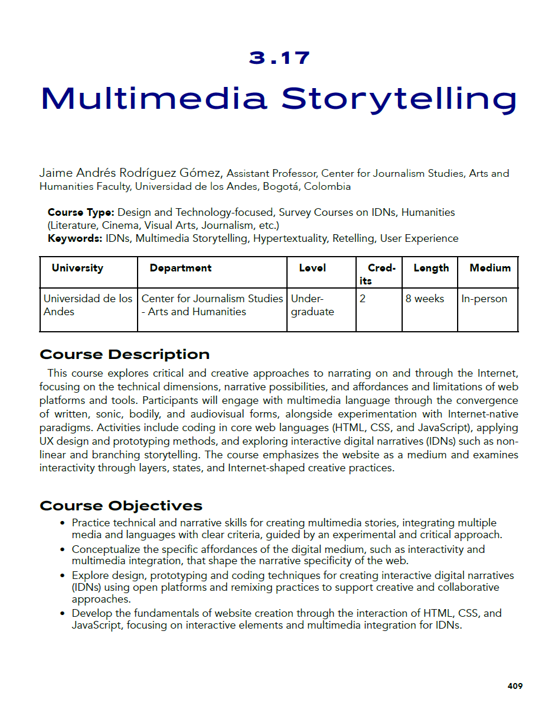

Las palabras en cursiva y color azul describen el propósito o el proceso principal detrás de cada uno de las experiencias y productos presentados aquí.
Una de las acciones de docencia que considero más relevantes durante este periodo es haber asumido un curso temático por primera vez. Quice que fuera Narrativas Digitales, entre otras razones, porque dentro del plan de estudios ocupa un lugar de fundamentación clave y la percepción de algunos estudiantes que lo habían tomado y me comentaban al respecto, no lo reflejaba. Por lo tanto, era oportuno que uno de los profesores de planta, habiendo transitado por un proceso de alineación curricular, importancia de la alineación curricular, pudiera darle un nuevo enfoque en aras de fortalecerlo y fortalecer el pregrado, ofreciendo un marco conceptual específico en relación a otros cursos temáticos y que, al mismo tiempo, estuviera articulado más estrechamente con las prácticas creativas que se abordan en los distintos lenguajes.
Para esta versión, se presentó la oportunidad de realizar una experiencia colaborativa con otras dos universidades junto a dos colegas que, en el campo de las NDIs (Narrativas Digitales Interactivas) están liderando y contribuyendo de manera activa a la consolidación del mismo a través de las discusiones académicas a nivel internacional. Junto a Harmut Koenitz, de la Södertörn University en Suecia, y María Cecilia Reyes, de la Universidad del Norte, en Barranquilla, realizamos el Workshop llamado "Decolonizing Interactive Digital Narratives Workshop", que juntó a estudiantes de las tres universidades en un ejercicio de análisis decolonial sobre algunos casos de estudio que les fueron asignados. Este ejercicio enrriqueció las aproximaciones teóricas abordadas en el curso y fue una posibilidad de tener una experiencia de internacionalización, que fortalece el pregrado. A continuación, adjunto el programa que diseñé para la versión 2025-10.
Desde el periodo 2024-10 tengo a mi cargo el curso de Narrativas Digitales, que hace parte de la Maestría en Humanidades Digitales. Aunque esta carga es adicional a mi carga obligatoria como profesor del Ceper, ha sido una oportunidad para contribuir a la Facultad de Artes y Humanidades en esta área específica, y al mismo tiempo, ha sido un espacio para complementar mi propia práctica pedagógica en cursos de tipo teórico, lo cual, sin duda, abonó el terreno para asumir con más herramientas y recursos teóricos y metodológicos el curso temático de pregrado. Aunque el curso de pregrado tiene un enfoque distinto, pues considero que así debería ser, hay algunos conceptos, casos de estudio y marcos conceptuales que elaboré al impartir el curso de la maestría, que orientaron el (re)diseño del curso de pregrado. A continuación, presentó las diapositivas de una de las clases del curso, que puede dar una idea de los conceptos que se abordan en el curso.
Como parte de mi labor docente, hace ya varios semestres realicé la primera versión de los Premios Jaimes de Ficción Sonora. Estos premios, que ya han acumulado cinco versiones, nacieron con el fin de implementar una estrategia que hiciera de la entrega final de los trabajos del curso de Narrativa Sonora 2 un ritual de premiación que impulsara a los estudiantes a alcanzar los mejores resultados posibles y reconociera distintas habilidades que se ponen en juego en la realización deeste tipo de productos. Lo que empezó siendo un experimento pedagógico con un grupo, terminó volviendose una especie de tradición, pues desde entonces cada grupo que inscribe ese curso conmigo espera desde el primer día que la entrega final sea una nueva versión de los Premios Jaimes. Destaco esta experiencia, no por ser una nueva propuesta, sino, al contrario, por haber continuado haciendola con el mismo objetivo de promover el compromiso y la calidad en los trabajos, y de hacer de la experiencia de aprendizaje una experiencia memorable. Aquí se puede ver una nota realizada por el equipo de comunicación sobre la segunda versión del premio, que se llevó a cabo en el periodo 2023-2.
Participo en la publicación "An Educator’s Guide to Interactive Digital Narrative: Syllabi and Resources from Around the World", co-editado por María Cecilia Reyes, Joshua A. Fisher y Jonathan Barbara, y publicado por Carnegie Mellon University Press, en colaboración con ARDIN (Association for Research in Digital Interactive Narratives). El libro es una colección de recursos, perspectivas y reflexiones pedagógicas, teóricas, metodológicas y prácticas en torno a la enseñanza de las narrativas digitales interactivas en distintos campos, incluyendo narrativa, desarrollo de videojuegos, periodismo, AR/VR/XR, humanidades digitales, entre otros. Reúne en total 45 programas (syllabus) de distintas partes del mundo, ofreciendo una visión kaleidoscópica de las NDI (Narrativas Digitales Interactivas), contribuyendo, de esta forma, a la consolidación y reconocimiento como campo académico. En el curso "Narrativa Multimedia" he abordado algunos conceptos y prácticas creativas que son fundamentales en las NDIs. Esta fue una oportunidad para situar al pregrado en la escena académica del campo de las NDIs y de reflexionar sobre lo que ha sido implementar este curso, conceptualizando los principales retos, aprendizajes y aciertos durante el proceso. Aquí se puede acceder a la publicación. Mi contribución se encuentra en las páginas 409 a 418. Abajo se puede ver una imagen de la página 409.
Diseñé y realicé dos talleres organizados por la Escuela de Posgrados, dirigidos a toda la comunidad, que tenían como objetivo ofrecer una introducción a la creación de experiencias inmersivas e interactivas usando gafas de Realidad Virtual (Oculus 3) y cámaras de reconocimiento del cuerpo humano o body tracking (Kinect). A los talleres asistieron entre 7 y 8 estudiantes y profesores de la Facultad de Artes y Humanidades. En la siguiente imagen puede verse una de los ejercicios realizados, que consitió en hacer una replica virtual de objetos que se encontraban en el espacio y ubicarlos en el espacio virtual de tal forma que coincidiera la percepción visual virtual con la percepción física tactil, dando como resultado un tipo de experiencia que se conoce como virtualidad aumentada.